Eclipse
Paso 1
Iremos a la pagina web oficial de Eclipse
Paso 2
Descargaremos el .exe
Paso 4
Al iniciar nos saldrá esto que no solo nos vale para una cosa.
Paso 5
Sino que además también para otros tipos de lenguaje de programación
Paso 6
Nos saldrá la ruta en donde podremos ubicar nuestro programa
Paso 7
Aceptamos términos y seguimos
Paso 8
Y dejamos que se instale
Paso 11
Asignaremos una ruta de trabajo
Paso 12
Nos saldrá el mensaje de bienvenida
Paso 13
Elegimos qué queremos hacer .por ejemplo, crear un nuevo proyecto
Paso 14
Generamos el nombre del nuevo proyecto y su ubicación
Paso 15
Y esto sería ya el proyecto, preparado para comenzar
Importar y exportar en Eclipse
Paso 1
En NeatBeans, en Files, tendremos las opciones de Import y Export, ya nos sale directamente para traerlo de Eclipse
Paso 2
También podremos exportar
Paso 3
Podemos coger una librería o proyecto y comprimirlo en .zip para abrirlo en Eclipse
Paso 4
Ahora en Eclipse, importamos. (Aunque es cierto que podemos hacer esto al revés, llevar de Eclipse a NeatBeans)
Paso 5
Buscamos el archivo .zip de antes
Paso 6
Nos aseguramos que tenemos todo selecionado y lo guardamos en una carpeta
Paso 7
Un proyecto que tengamos o uno de prueba
Paso 8
Y ya tendríamos el archivo para trabajarlo en Eclipse
Configuaración
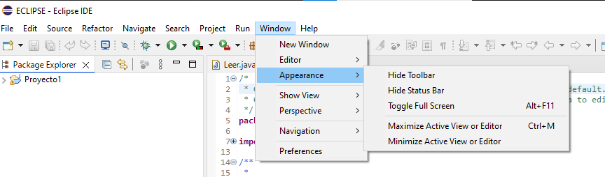
Paso 1
Podemos venir a la pestaña "Window" en la que podemos configuar
todo lo que queramos, para ver todo de una forma diferente, etc.
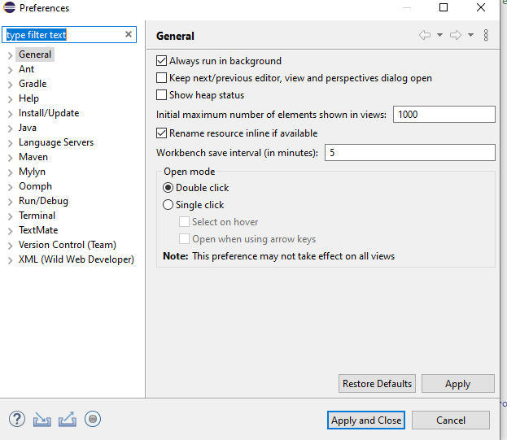
Paso 2
Si volvemos a la pestaña de "Window" veremos que pone "Preferences",
en donde podremos cambiar la apariencia del programa a otro color distinto y de hecho también configurar
algunas opciones para Ant o Gradle o incluso Java.
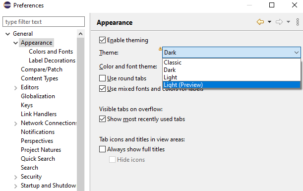
Paso 3
Aqui podemos modificar la apariencia y ponerla al gusto.
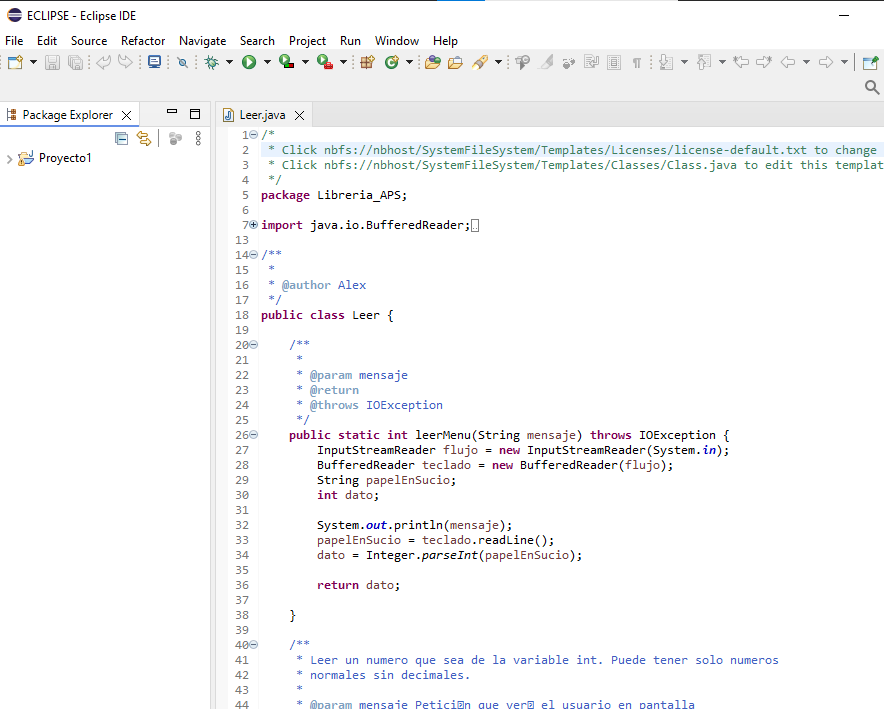
Paso 4
Podemos ponerlo de diferentes colores.
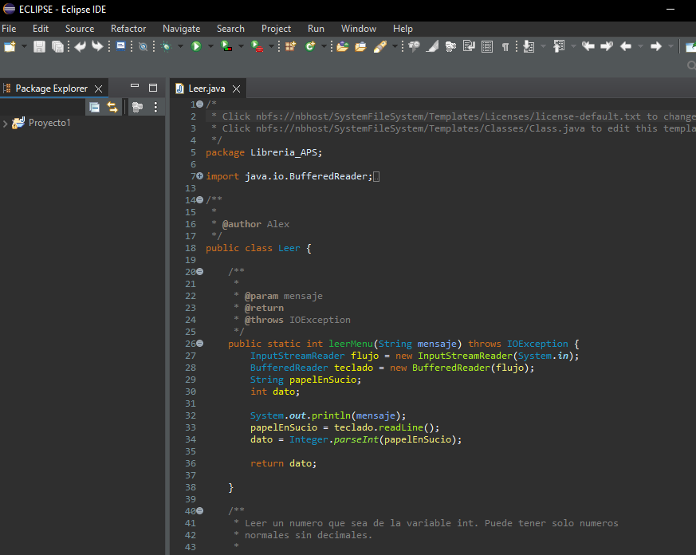
Paso 5
Así lo podrás tener al gusto que quieras o mejor te aclares, en cuanto a
diferenciación de variables, comentarios, etc. Simplemente como te veas más cómod@.
Ventajas e inconvenientes de Eclipse
Ventajas
Gratuito y de código abierto: es gratuito y tiene una gran comunidad de desarrolladores que
contribuyen con plugins y mejoras.
Multilenguaje: Auque es muy conocido por Java, soporta otros lenguajes como Python, C/C++, PHP,
y más a través de plugins.
Ecosistema de plugins: tiene una gran variedad de extensiones para personalizar y ampliar
sus funcionalidades según las necesidades del proyecto.
Entornos multiplataforma: funciona tanto en Windows, macOS, como en Linux.
Soporte para grandes proyectos: tiene una arquitectura y características adecuadas para proyectos
grandes y complejos.
Integración con herramientas de desarrollo: es comptaible con sistemas como Git y SVN, y con herramientas
de compilación como Maven y Gradle.
Depurador Integrado: tiene un potente depurador, tienes puntos de interrupción, inspección de variables
y evaluación de expresiones.
Inconvenientes
Rendimiento: puede pesar bastante e ir lento si tienes recuros limitados.
Interfaz poco intuitiva: usuarios encuentran la interfaz menos fácil de usar, que por ejemplo IntelliJ IDEA o
Visual Studio Code.
Actualizaciones y compatibilidad algunas actualizaciones pueden romper la compatibilidad con plugins o proyectos.
Curva de aprendizaje es complicado de usar y de aprender para principiantes sobretodo.
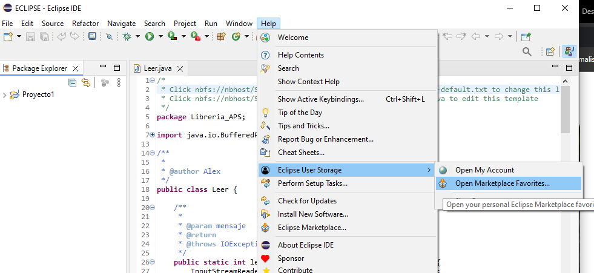
Paso 1
Nos dirigiremos a "Help" en donde tendremos "Eclipse User Storage" e iremos a
"Open Marketplace Favorites".
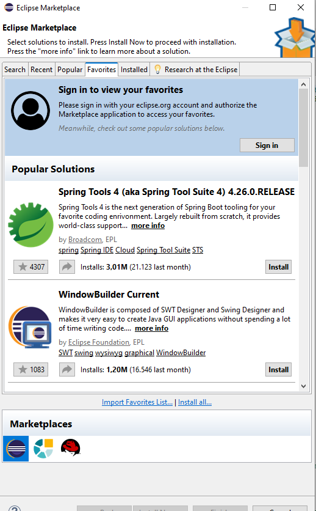
Paso 2
Vemos que tenemos diferentes plugins para añadir. Aquí tendremos para buscar,
guardar en favoritos, ver los más populares, etc. Elegiré alguno como puede ser Window Builder Current
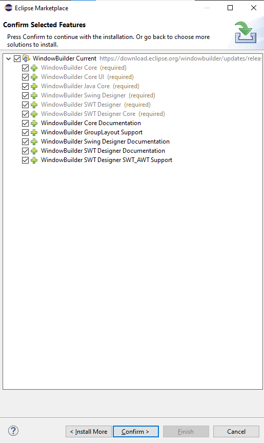
Paso 3
Este plugin, trabaja con interfaces gráficas (GUIs) en entornos como esta
y está dirigido para facilitar la creación y edición visual de ventanas y componentes gráficos.
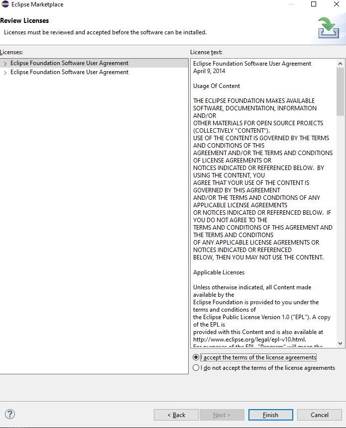
Paso 4
Aceptaremos los términos condiciones. Y ya estaría instalado.
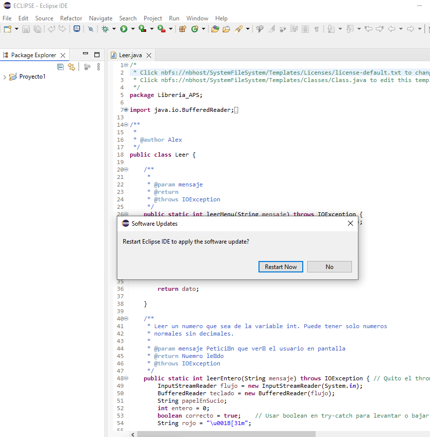
Paso 5
Tendremos que reiniciar para que se implemente el plugin.
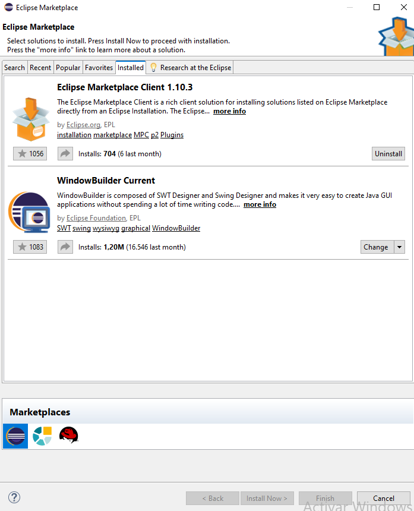
Paso 6
Si volvemos al mismo punto de antes de los plugins y nos dirigimos a "Installed",
veremos los plugins que tenemos.
INICIO